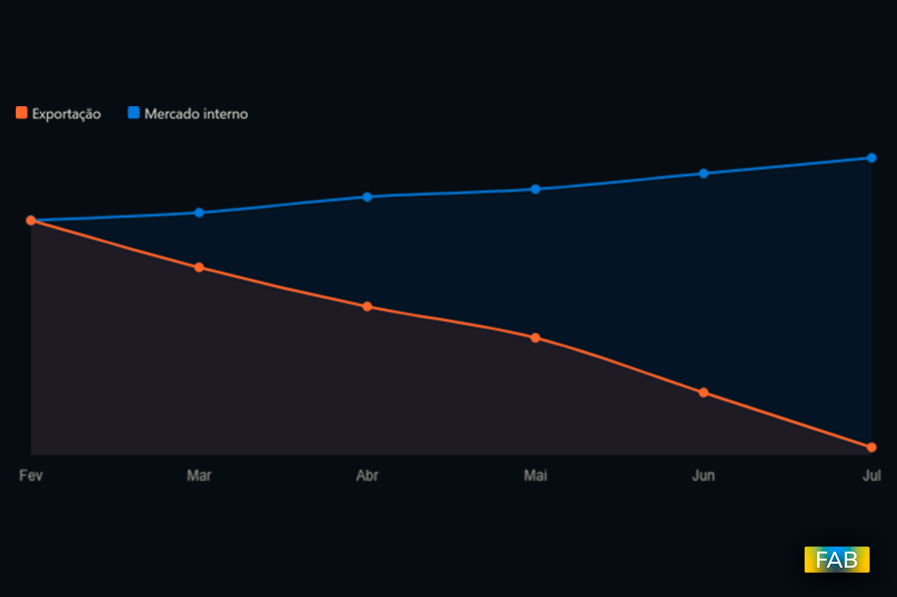
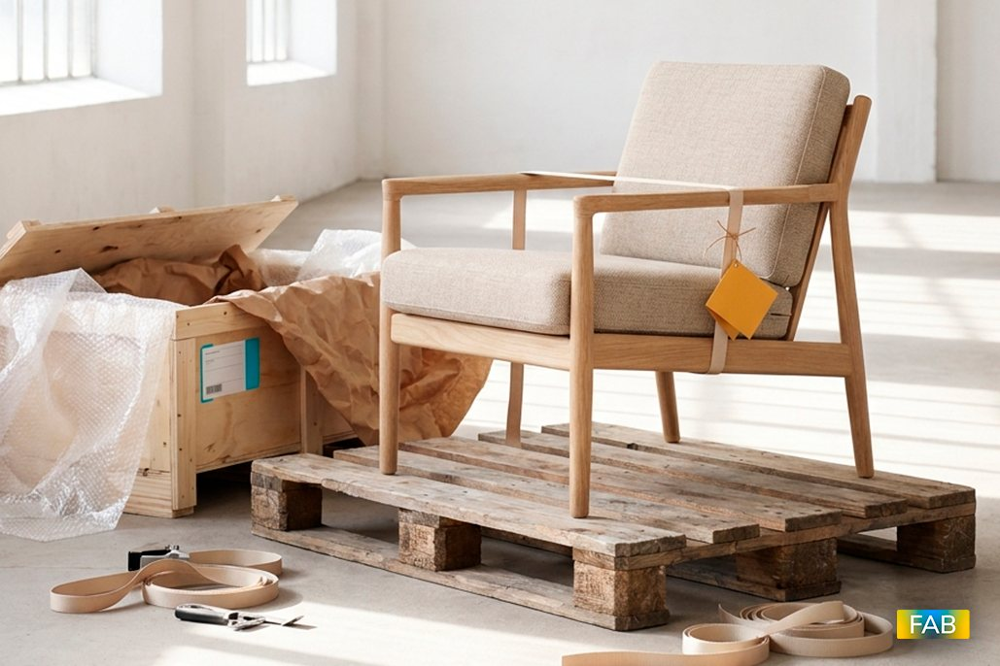
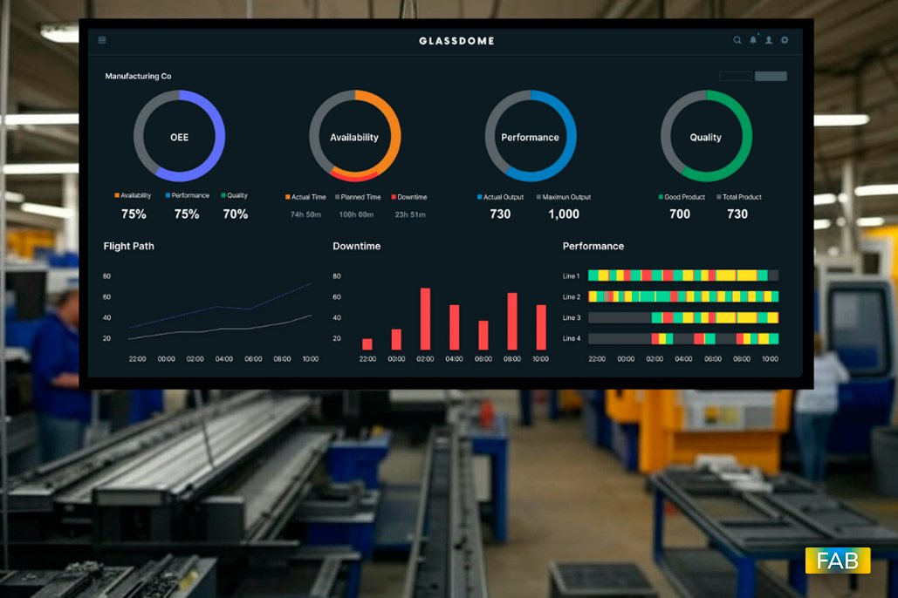

Blog
Blog Asisto
Análises e reflexões sobre gestão, operação e tecnologia.

O motor do setor moveleiro trocou de lugar
Durante anos, o crescimento do setor moveleiro brasileiro esteve atrelado ao mercado externo. Exportar era o caminho natural pra quem já tinha escala de produção, e o desempenho das exportações costumava ser tratado como termômetro da saúde do setor.
Ler artigoPrazo alongado virou armadilha? O novo drama financeiro do setor moveleiro
Alongar prazo de pagamento se tornou prática recorrente na cadeia moveleira, uma forma de aliviar o caixa de quem compra. Mas o que parece alívio de um lado pode virar armadilha do outro.
Ler artigo
Só 4% da produção moveleira brasileira vai para fora do país
Apesar da força da indústria moveleira brasileira, sua presença no mercado internacional segue pequena: cerca de apenas 4% da produção nacional é destinada à exportação.
Ler artigoTarifa de 25% dos EUA: o que está em jogo para o setor moveleiro
No dia 15 de julho, os Estados Unidos confirmaram uma nova tarifa de 25% sobre parte dos produtos brasileiros, uma medida separada da tarifa de 50% que já está em vigor sobre móveis e colchões desde agosto do ano passado. A nova taxação passa a valer em 22 de julho.
Ler artigoSustentabilidade no setor moveleiro: de discurso a critério de mercado
Durante anos, sustentabilidade foi tratada como atributo de marketing no setor moveleiro, algo que diferenciava algumas marcas, mas não interferia na decisão de compra da maioria dos clientes. Esse cenário mudou.
Ler artigo
IA na cadeia moveleira: já está no sistema, não só na máquina
Quando o assunto é inteligência artificial na indústria, a imagem que vem à cabeça costuma ser a máquina no chão de fábrica. Mas boa parte do avanço real está acontecendo em outro lugar: dentro do sistema de gestão.
Ler artigoIndústria 5.0 no setor moveleiro: o que mudou não foi só a máquina
A 11ª edição da ForMóbile, realizada entre 30 de junho e 3 de julho em São Paulo, reuniu mais de 550 marcas expositoras e colocou a Indústria 5.0 no centro do debate sobre o futuro do setor moveleiro.
Ler artigoJoão Pessoa: boom imobiliário e demanda por mobiliário hoteleiro e residencial
João Pessoa vive o maior boom imobiliário do Nordeste. O preço do metro quadrado na capital paraibana quase dobrou desde 2019, saltando de R$4,5 mil para cerca de R$8 mil em 2026, segundo o Índice FipeZap, colocando a cidade entre as capitais com maior valorização do país.
Ler artigoNordeste como nova fronteira de negócios para o setor moveleiro
O Nordeste consolidou-se, em 2026, como a principal fronteira de expansão para o setor moveleiro. Depois de superar o Sul e retomar a segunda posição no consumo nacional, atrás apenas do Sudeste, a região virou destino natural para fábricas e marcas que buscam espaço num mercado ainda pouco disputado.
Ler artigoMovelsul Brasil 2026: em agosto, fábrica e loja se encontram para fechar negócio no segundo semestre
A 25ª edição acontece de 17 a 20 de agosto, em Bento Gonçalves. Com mais de 200 marcas confirmadas e visitantes de mais de dez países já inscritos, a feira chega num momento em que o setor precisa de negócios reais.
Ler artigoForMóbile 2026: a feira que conecta fábrica e fornecedor abre em São Paulo
A 11ª edição começou ontem e vai até 3 de julho, no São Paulo Expo. Diferente de feiras voltadas ao varejo, a ForMóbile fala diretamente com quem produz: máquinas, ferragens, matéria-prima e automação para toda a cadeia industrial.
Ler artigo
O ticket médio sobe, o volume cai: o que está acontecendo com o varejo de móveis
O setor faturou mais em valor, mas vendeu menos peças. Em 2025, o crescimento nominal escondeu uma retração real. Em 2026, os primeiros meses confirmam que a recuperação existe, mas é lenta e desigual.
Ler artigo
Menos impulso, mais pesquisa: como o brasileiro decide a compra de móvel hoje
O comportamento de quem compra móvel mudou. A jornada ficou mais longa, a decisão mais racional e o crédito passou a definir quem consegue converter intenção em compra. O quadro é diferente para cada faixa de renda.
Ler artigoConstrução civil cresce 2,9% no primeiro trimestre e abre janela para o setor moveleiro
O setor que mais puxa a demanda por móveis populares voltou a crescer. Com lançamentos imobiliários em alta e um pipeline robusto de entregas para 2026 e 2027, a pergunta para quem fabrica móveis é: quando essa demanda chega na loja?
Ler artigoSplit payment em 2027: o que muda no caixa de quem fabrica móveis
A reforma tributária muda como o imposto é recolhido. A partir de 2027, o tributo sai da transação no momento do pagamento. Para a fábrica que vende a prazo e produz com ciclo longo, o impacto no capital de giro é concreto.
Ler artigoAcordo Mercosul-UE entra em vigor: o que muda para quem fabrica e vende móveis no Brasil
O tratado começou a valer em 1º de maio de 2026, após 26 anos de negociação. Para o setor moveleiro, a equação tem dois lados: uma janela de exportação que se abre e uma pressão de concorrência que aumenta no mercado interno.
Ler artigo
O setor moveleiro gaúcho tem desempenho desigual em 2026: RS avança, Bento Gonçalves recua
O Rio Grande do Sul registrou crescimento no faturamento e nas exportações no primeiro trimestre. Mas o polo de Bento Gonçalves, o mais importante do estado, foi na direção contrária.
Ler artigo
Copom corta a Selic para 14,25%: o que o início do ciclo de queda significa para o setor moveleiro
Em decisão unânime, o Banco Central reduziu a Selic de 14,50% para 14,25% ao ano. É o terceiro corte consecutivo do ciclo. O crédito ainda é caro, mas a direção mudou.
Ler artigoFrete rodoviário sobe pelo 5º mês seguido em 2026: o impacto para quem fabrica e vende móveis
O preço médio do frete por km rodado chegou a R$8,66 em abril, alta de 8,39% em relação a março. Diesel e tensão no Oriente Médio puxam os custos, e o setor moveleiro absorve o impacto antes de conseguir repassá-lo.
Ler artigo
Reforma tributária já está em transição: o que muda para fábricas de móveis até 2033
A partir de 2026, fábricas de móveis operam com dois sistemas tributários ao mesmo tempo. Entenda o que a transição significa na prática, quais são os benefícios e onde estão os riscos.
Ler artigo
Juros devem ficar altos por mais tempo: o que isso significa para a fábrica de móveis
O mercado segue revisando os juros para cima. Com Selic em 14,5% ao ano e expectativa de encerrar 2026 acima de 13,5%, o crédito caro continua pesando na operação de quem produz e vende móveis.
Ler artigo
Copa do Mundo 2026: o que 39 dias de torneio significam para quem vende e fabrica móveis
O Mundial movimenta R$ 4,32 bilhões no varejo brasileiro, mas o impacto não chega igual para todos os setores. Entenda o que muda para lojas de móveis e fábricas.
Ler artigoComo o Odoo e a Asisto impulsionam o crescimento de grandes empresas
Empresas que crescem rápido precisam de sistemas que acompanhem seu ritmo.
Ler artigoComunicação automatizada: o novo padrão de excelência com o Asisto Flow
Na era da experiência, quem responde rápido sai na frente.O Asisto Flow automatiza toda a comunicação com o cliente, garantindo agilidade e personalização em cada contato.
Ler artigoERP conecta todos os setores da sua empresa
O Asisto ERP foi desenvolvido para ser o coração da Indústria 4.0.Ele conecta produção, estoque, vendas e logística, eliminando gargalos e aumentando a eficiência operacional.
Ler artigoParceria oficial Asisto + Odoo inovação global para empresas de alta performance
A Asisto é parceira oficial do Odoo, a plataforma ERP mais usada no mundo, com mais de 12 milhões de usuários.
Ler artigoOrganização e rastreabilidade total em certificações
Empresas certificadoras lidam com centenas de processos simultâneos — e qualquer erro pode comprometer toda a operação.
Ler artigoA inteligência artificial que transforma o atendimento de qualquer negócio
A nova era da automação inteligente
Ler artigo